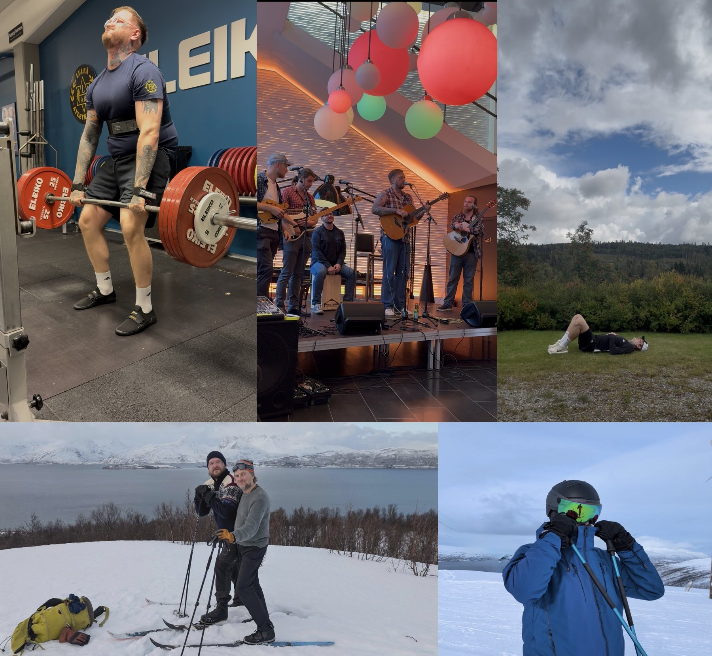

Christian Holmberg Sjöling
About
I am a corpus linguist and methodologist set to defend my doctoral dissertation “Complexity, Variation, and Correctness”: A Corpus-Linguistic Approach to High-Stakes EFL Writing Assessment on Friday 11 December, with Professor Phil Durrant (University of Exeter) as the opponent.
My research centres around learner corpus linguistics, with a particular focus on describing written learner language in English in relation to different educational contexts and situations. As such, I analyse a range of linguistic constructs (e.g., lexical, phraseological and grammatical complexity, accuracy, and cohesion) in, for example, high-stakes exams, cross-sectional/longitudinal corpora, and mixed-methods designs.
I am currently involved in a range of different projects:
- Multiple small-scale projects concerning methodological and theoretical issues in corpus linguistics in collaboration with Taehyeong Kim (Northern Arizona University)
- A project in which large language models will be evaluated, trained, and applied for language assessment together with members of the Automated Language Testing and Assessment (ALTA) institute at the University of Cambridge
- A larger project exploring artificial intelligence and different dimensions of language, creativity, and ethics led by Professor Dan McIntyre (Uppsala University)
- An evaluation of the accuracy of the Lexicogrammatical Tagger led by Associate Professor Kristopher Kyle (University of Oregon)
- A translation and validation of the Nature Relatedness scale into Swedish led by Professor Mats Jong (Mid Sweden University)
- A project together with Professor Sven Anders Johansson (Mid Sweden University) where we will explore how/if AI Chatbots for therapeutical purposes socialise humans into particular conceptualisations of romantic love
Contact: christian.holmberg.sjoling@ltu.se
Published journal articles
- Holmberg Sjöling, C. (2026). The relation between linguistic accuracy and scoring of Swedish EFL students’ writing during a high-stakes exam. Assessing Writing, 67, 100995. DOI
- Holmberg Sjöling, C. (2025). The effect of lexical complexity on grading of Swedish EFL learners’ texts during high-stakes exams. International Journal of Learner Corpus Research, 11(2), 245–275. DOI
- Holmberg Sjöling, C. (2023). A longitudinal study of Swedish upper secondary school students’ vocabulary development. Nordic Journal of English Studies, (3), 59–80. DOI
Accepted journal articles
- Holmberg Sjöling, C. (accepted). The influence of grammatical complexity on grade in assessment by expert raters and teachers in a Swedish high-stakes EFL exam. Journal of Second Language Writing.
Books in preparation
- Holmberg Sjöling, C. Evaluating computational measures in learner corpus research.
Doctoral dissertation
- Holmberg Sjöling, C. “Complexity, Variation, and Correctness”: A Corpus-Linguistic Approach to High-Stakes EFL Writing Assessment.
Non-peer-reviewed publications
- Holmberg Sjöling, C. (2025). Endast i skolan är det kontroversiellt att börja med det grundläggande. ViLärare.
- Holmberg Sjöling, C. (2021). Att tillaga ett grishuvud. Glänta, (2) [theme issue: Methods].
Peer-reviewed conference presentations
- Holmberg Sjöling, C. & Kim, T. (2026). Expanding the construct of grammatical complexity: A case for grammatical diversity in writing. At ICAME47, 26–30 May, University of Koblenz, Germany. [oral presentation; full paper]
- Holmberg Sjöling, C. & Kim, T. (2026). Expanding the construct of grammatical complexity: A case for grammatical diversity in writing. At ASLA, Swedish Association of Applied Linguistics Symposium, 7–8 May, Umeå University, Sweden. [oral presentation; full paper]
- Holmberg Sjöling, C. & Kim, T. (2026). Expanding the construct of grammatical complexity: A case for grammatical diversity in writing. At the American Association for Corpus Linguistics (AACL) 2026, 18–19 April, University of Florida, USA. [oral presentation; full paper]
- Holmberg Sjöling, C. (2025). The influence of grammatical complexity features on grade in Swedish high-stakes EFL exams. At the Learner Corpus Research Graduate Conference 2025, 22–24 October, Chemnitz University of Technology, Germany. [oral presentation; full paper] [online]
- Holmberg Sjöling, C. & Kim, T. (2025). Introducing an index for analysis of grammatical diversity in writing. At the Learner Corpus Research Graduate Conference 2025, 22–24 October, Chemnitz University of Technology, Germany. [oral presentation; full paper] [online]
- Holmberg Sjöling, C. & Kim, T. (2025). Expanding the construct of grammatical complexity: A case for grammatical diversity in writing. At Second Language Research Forum, Northern Arizona University, September 25–28, USA. [oral presentation at roundtable]
- Holmberg Sjöling, C., & Kim, T. (2025). Writing trajectories of grammatical complexity in L1 children’s writing. At ICAME46, 17–21 June 2025, Vilnius University, Lithuania. [oral presentation; full paper]
- Holmberg Sjöling, C. (2025). The effect of accuracy on grading of Swedish EFL students’ writing during high-stakes exams. At National Forum for English Studies, 9–11 April 2025, Lund University, Sweden. [oral presentation; full paper]
- Holmberg Sjöling, C. (2024). The effect of noun phrase complexity on the grading of EFL students’ texts. At The American Association for Applied Linguistics, 16–19 March 2024, Houston, USA. [oral presentation; full paper]
- Holmberg Sjöling, C. (2023). Using lexical complexity measures to predict grades in student writing. At The Graduate Student Conference in Learner Corpus Research, 25–27 October 2023, Eurac Research, Italy. [oral presentation] [online; full paper]
- Holmberg Sjöling, C. (2023). Lexical complexity and assessment of EFL writing: a study of the assessment of English vocabulary in the Swedish national tests. At EuroSLA32, August 30–September 2, University of Birmingham, UK. [oral presentation; full paper]
- Holmberg Sjöling, C. (2023). Using grammatical and syntactic complexity measures to predict grades in student writing. At National Forum for English Studies, 26–28 April 2023, Mälardalen University, Sweden. [oral presentation; full paper]
- Holmberg Sjöling, C. (2023). Using lexical complexity measures to predict grades in student writing. At National Forum for English Studies, 26–28 April 2023, Mälardalen University, Sweden. [oral presentation; full paper]
- Holmberg Sjöling, C. (2021). A longitudinal study of Swedish upper secondary school students’ vocabulary development. At The Graduate Student Conference in Learner Corpus Research, 11–12 October 2021, Inland Norway University of Applied Sciences, Norway. [oral presentation; full paper] [online]
Invited talks
- Holmberg Sjöling, C. (2025). Can we use quantitative linguistic methods to inform language teaching and learning? Hosted by the Automated Language Teaching and Assessment group at the University of Cambridge, UK.
- Holmberg Sjöling, C. (2025). The effect of accuracy on grading of Swedish EFL students’ writing during high-stakes exams. At the Centre for English Corpus Linguistics in Louvaine-la-Neuve, Belgium.
- Holmberg Sjöling, C. (2025). Can we use quantitative linguistic methods to inform language teaching and learning? Visiting scholar guest lecture hosted by the Department of English and the Department of Education at Northern Arizona University, USA.
- Holmberg Sjöling, C. (2024). The relation between linguistic complexity and grading during high-stakes EFL exams. At the Language Didactics seminar, Department of Education and Special Education, Gothenburg University, Sweden.
- Holmberg Sjöling, C. (2023). The effect of accuracy on grading of texts written by EFL students. Higher seminar of English Linguistics at Uppsala University, Sweden.
- Holmberg Sjöling, C. (2022). Lexical richness and assessment of EFL writing: a study of the assessment of English vocabulary in the Swedish national tests. Higher seminar of English Linguistics at Uppsala University, Sweden.
- Holmberg Sjöling, C. (2022). Presentation of PhD project plan. Higher seminar of English Linguistics at Mid Sweden University, Sweden.
- Holmberg Sjöling, C. (2022). Presentation of PhD project plan. Higher seminar of English Linguistics at Uppsala University, Sweden.
Local talks
- Holmberg Sjöling, C. (2025). Introducing an index for analysis of grammatical diversity in writing. At the higher seminar of Language, Literature and Education, Luleå University of Technology.
- Holmberg Sjöling, C. (2025). A critical perspective on the inclusion of artificial “intelligence” in higher education. At the departmental day of Education and Languages, Luleå University of Technology.
- Holmberg Sjöling, C. (2025). Hur påverkar språket betygsättning under nationella proven i engelska? Utbildningsdialog i Norr (UDiN), Luleå.
- Holmberg Sjöling, C. (2024). The effect of grammatical complexity on grading of Swedish EFL learners’ texts in a high-stakes exam. European Day of Languages at Luleå University of Technology 2024.
- Holmberg Sjöling, C. (2022). Using vocabulary notebooks in EFL teaching. European Day of Languages at Luleå University of Technology 2022.
Awards
- Runner-up for the John Sinclair Bursary 2026 for best presentation by junior researchers, ICAME47, University of Koblenz, Germany (2026).
- People’s Choice Award for Best Research Paper, Learner Corpus Research Graduate Conference 2025, Chemnitz University of Technology, Germany (2025).
- Alumni of the Month, Mid Sweden University (2021).
Grants
- Grant from Wallenbergsstiftelsens Jubileumsanslag, Sweden (2025). Total amount: SEK 16,000.
Research visits
- Visiting scholar, Automated Language Teaching and Assessment (ALTA) Institute, University of Cambridge, UK (October–November 2025).
- Visiting scholar, Northern Arizona University, USA (August 2024–February 2025).
Editorial assignments
- Nordic Journal of English Studies: member of the editorial board (2025–) and assistant copy editor (2026–)
Peer reviewer of journal articles
- Journal of Research in Reading
- Language Learning & Technology
- International Journal of Learner Corpus Research (including a special issue, 2026)
- Nordic Journal of English Studies
Peer reviewer of conference abstracts
- Second Language Research Forum (2026). Language teachers and researchers without borders. Université de Montréal, 2–4 October, Canada.
- Second Language Research Forum (2025). Elevating Perspectives: Reaching New Heights in L2 Research. Northern Arizona University, September 25–28, USA.
Roles as student/PhD student representative
- Doctoral representative in an evaluation of KTH Royal Institute of Technology conducted by the Swedish Higher Education Authority (Spring 2026–Spring 2027).
- Election committee member of the PhD Students Association (2024–2025, 2025–2026).
- Doctoral representative on the university board (2022–2023, 2023–2024), Luleå University of Technology.
- Chair of the PhD Students Association (2022–2023, 2023–2024), Luleå University of Technology. [each term was 20% of my employment]
- Student representative in Treklövern’s evaluation of Mid Sweden University, Karlstad University, and Linnæus University (2019).
- Student representative on the council for teacher work placement (VFU) (autumn 2018–2020), Mid Sweden University.
- Student representative on the council for Swedish Literature (2018–2021), Mid Sweden University.
- Student representative on the council for Swedish Linguistics (2018–2020), Mid Sweden University.
- Student representative on the council for teacher education (2016–2020), Mid Sweden University.
Personal
